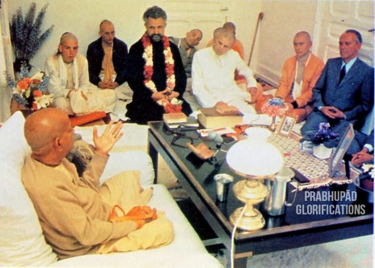

A Sādhu Has No ill Motive.
Posted on : 25th September, 2024

When people with material vision would come to him, my Guru Maharāja used to receive them politely and give them very palatable sweet prasadam and a garland. Because they would be happy with the nice garland and the nice food, and would appreciate the respectful way the sãdhu had treated them, they would feel like offering some service. And by serving a sãdhu they will get a good result. A sadhu has no ill motive. It is said that even his curse is a blessing, sãdhu robi pāpi. When Narada Muni cursed the two sons of Kuvera, Nalakuvara and Manigriva, to be born as yamala-arjuna trees in the courtyard of Nanda Maharäja, Narada Muni's curse proved to be a blessing; without it, they could not have met Krsna.
~ HH Gaur Govind Mahārāja {Sri Guru, Volume 1,Pg. 52}